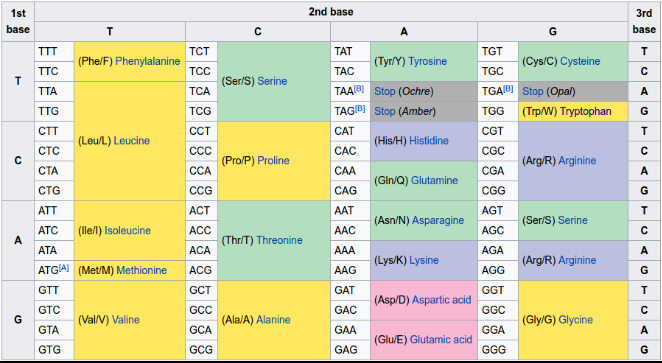

We’ve finally got to the point in the software world where no big changes are possible. Every change breaks something, introduces backward incompatibilities and so on. More are more we are going to live in the world where software mutates gradually, advancing is small steps without much plan and intelligent design. Similarly to how organisms are dragged by natural selection, it is going to be propelled in unknown direction without asking us whether we like it or not.
When I was a kid I read a book by Alexander Oparin and there was a paragraph that hit me with the force of sledgehammer. Even now, a quarter of century later, I remember what it said. To paraphrase it: “ATP may not be the most efficient way to store energy in the living cell. However, any alternative is going to get eaten before it gets anywhere. So, for all practical purposes, we are stuck with ATP.”
Making an analogy with software is not hard: We are stuck with technology we have. Any radical alternative will be crushed by the sheer momentum of the code already out there. And, by the way, it’s not going to get any better, so get used to it.
For a lot of people that sounds like good news. Evolution is heading towards perfection, isn’t it? We should embrace it rather than fight it!
Well, this article is meant to be a reminded for the programmers about the shortcomings of evolution.
There are many examples to choose from. Giraffe’s vagus nerve is one of my favourite ones, but let’s rather look at something that programmers are intimately familiar with. Let’s look at digital encoding.
As you may remember from high school, DNA uses four different bases to encode information: A, G, C and T. The bases are linearly ordered in the strand of DNA. In effect, DNA is very much like binary code that we deal with on daily basis, except that it’s quaternary code, not binary one. So, instead of “0001001110110110”, when you look at DNA you’ll see stuff like “AGGTCAATTGACCTC”.
You may also remember that DNA is used as a blueprint for assembly of proteins.
Technically, triplets of DNA bases (also known as codons, say AGG or TCA) are each translated into one amino acid in the protein chain. The translation is fully deterministic. It may look, for example, like this:
AGG-TCA-ATT-GAC-CTC => Arg-Ser-Ile-Asp-Leu
Now, what you may not remember from high school is that there are only 20 amino acids being used in living cells.
Something is not adding up here.
Three quaternary digits in a codon mean, let me seeeee… 64 possible codons.
But there are only 20 amino acids!
OK, fair enough, there’s a special “stop” codon (EOF in our jargon), that terminates the synthesis of the protein chain.
But even then: What do those remaining 43 codons encode?
And here’s a table, stolen from Wikipedia, showing what’s going on:

It turns out that those extra codons don’t encode anything special. They are just redundant ways to encode the same old boring amino acids.
So, here we see the evolution, which is supposed to be super-sensitive even to small improvements in efficiency, wasting ~30% of the DNA for no good reason. Yuck.
But that’s not all!
There are two additional rare amino acids. A-ha, you cry. That improves the efficiency of the encoding. And maybe there are other rare amino acids that weren’t discovered yet. So, in the end, evolution may not be as wasteful as it seems!
Except that no. It turns out that these two new amino acids are both encoded by re-purposing the one of the “stop” codons, which can still act as “stop” codon, depending on circumstances. Special molecular machinery, in a way that is unclear to me, must be added to mRNA to deal with the translation.
And don't forget that "start" codon is the same codon that encodes Methionine. If it happens to be near the beginning of the strand, it's interpreted as "start", otherwise it's Methionine.
I am sure that any programmer now experinces that sinking feeling associated with browsing through legacy code. And it gets worse as he discovers more and more stuff.
Finally, when he learns about transposons, the frustrated programmer explodes: “This genetic code thing is total crap! Let’s tear it down and rewrite it from scratch!”
Except that you can’t. Your life depends on it.
EDIT(Oct 2017): In case you think that correspondence between codons and amino acids is simply determined by chemical properties of said codons and amino acids, John Maynard Smith & Eörs Szathmáry in "The Major Transitions in Evolution", describe a possible evolutionary mechanism for changing this correspondence. They even point out the example of mitochondrial DNA of flatworms and echinoderms where, apparently, AAA codon changed from coding lysine, as normal, to coding asparagine.
Also, fun column by Douglas Hofstadter.
Feb 25th, 2017